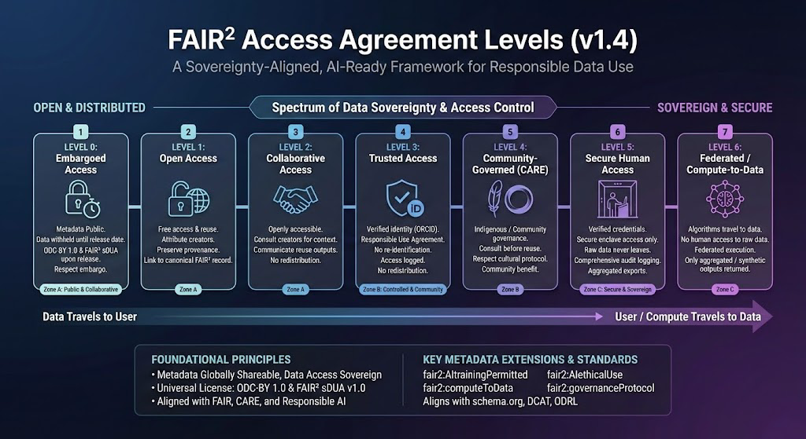

FAIR² Access Agreement Levels
The FAIR² Access Agreement Levels define a structured, interoperable framework for governing dataset availability, reuse conditions, Responsible AI constraints, and sovereignty protections.
This index provides an entry point to the full FAIR² access governance documentation for levels 0 through 6, including:
- Definitions
- Constraint models
- Case scenario matrices
- Full JSON-LD metadata examples
- Navigation between levels
Each level builds on earlier ones, adding stronger governance, identity, environment, or ethical constraints.
Access Levels Overview
| Level | Name | Summary |
|---|---|---|
| Level 0 | Embargoed Access | Metadata open; dataset inaccessible until release date; discoverable and citable. |
| Level 1 | Open Access | Fully open; optional ethical constraints; may restrict AI training or exports. |
| Level 2 | Collaborative Access | Open, but with expectations of attribution, reciprocity, or consultation. |
| Level 3 | Trusted Access | Verified identity; Responsible Use Agreement; use logging; controlled sharing. |
| Level 4 | Community-Governed (CARE) | Governed by communities; CARE-informed decision rights; consultation/approval required. |
| Level 5 | Secure / Controlled Environment | Sensitive data; secure environments; no raw downloads; strict audit logging. |
| Level 6 | Federated Compute-to-Data | Algorithms visit data; no raw access; only aggregates/derived outputs permitted. |

Documentation Index
Each level has a dedicated page:
Access Level 0 — Embargoed Access
👉 Level 0
Metadata open, dataset under embargo; early discoverability and citation.
Access Level 1 — Open Access
👉 Level 1
Dataset is openly available; may include specific reuse constraints (AI training, export limitations, consultation).
Access Level 2 — Collaborative Access
👉 Level 2
Open reuse with expectations of reciprocity, collaboration, and communication of results.
Access Level 3 — Trusted Access
👉 Level 3
Identity verification (ORCID or institutional), RUA acceptance, access logging.
Access Level 4 — Community-Governed (CARE)
👉 Level 4
Governed under CARE Principles; cultural/ethical protocols; community consultation or approval.
Access Level 5 — Secure / Controlled Environment
👉 Level 5
Sensitive human-derived or regulated data; accessible only in secure infrastructure.
Access Level 6 — Federated Compute-to-Data
👉 Level 6
No raw access; analytics via federated compute; strict export limitations.
FAIR² Constraint Model
All access levels may be refined using a structured set of FAIR² constraints:
- identity: none / ORCID / institutional / both
- environment: open / secureHuman / computeToData / hybrid
- communityGovernance: none / consultationRecommended / consultationRequired / communityApprovalRequired
- aiTraining: allowed / restrictedWithConditions / prohibited
- exportRestriction: none / aggregated-only / anonymized-only / derived-parameters-only
These constraints are documented in detail at each level.
Navigation Between Levels
Each level page links to:
- previous level
- next level
This ensures smooth traversal across the entire governance hierarchy.
Feedback & Contributions
To propose changes or contribute improvements:
- Open a GitHub issue
- Submit a pull request
- Contact the FAIR² specification team
FAIR² documentation follows the same principles as FAIR data: transparent, modular, and machine-readable.
End of Master Index — FAIR² Access Agreement Levels